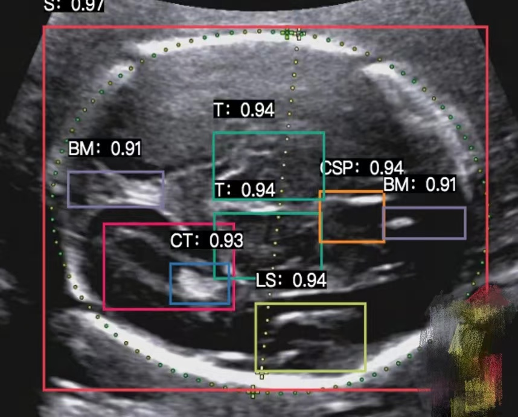
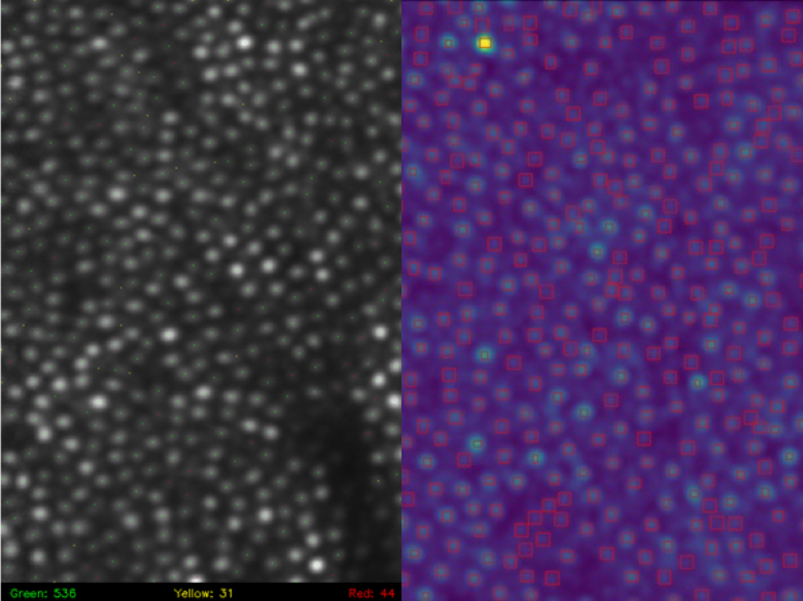
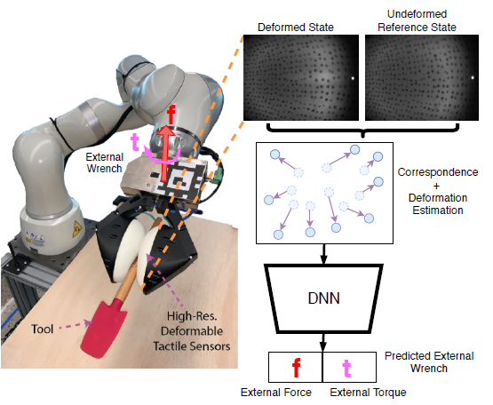

I am a first year Master's student in CSE at the University of Michigan, Ann Arbor. I'm broadly interested in machine learning, particularly its applications in healthcare settings. I’m excited to find out how machine learning algorithms can improve the standard and accessibility of healthcare, especially when a large amount of formatted electronic medical data is available. I’m also interested in learning robust representations of high-dimensional data, possibly with supervision from another modality.
Previously, I graduated Summa Cum Laude from the Ohio State University majoring in CSE (AI track). During the time, I was fortunate to learn a lot from Prof. Raef Bassily about machine learning fundamentals. Before that, I interned at Infopass Technology in Changsha, where I worked on the passenger flow control system(based on cameras), which was later deployed to subway systems in multiple major cities.
What's New
- Oct 2021: I will start collaborating with the C. Galban Lab, working on computer vision tasks on medical images.
- Aug 2021: I started pursuing my Master's degree in CSE at University of Michigan, Ann Arbor.
- May 2021: I graduated from the Ohio State University, Columbus.
- Mar 2021: CITI program certification: Responsible Conduct of Research(Biomedical)[RCR], Human Subjects Protection(Biomedical)[HSP].
Teaching
- SI670 - Applied Machine Learning: Instructional Aide, University of Michigan, Fall 2021
- CSE3521/5521 - Introduction to Artificial Intelligence: Grader, the Ohio State University, Spring 2020
Selected Projects
-

Inspecting Ultrasound Image of Unborn Fetus by Deep Learning Integrated System
Given ultrasound images of 41 different parts of unborn fetus (thalamus, lateral ventricles, etc.), we designed an algorithm to assess the quality of the images. The system was aimed for automating the training process of medical school students.
[website(credentials required)] -

Adaptive Optics-Scanning Laser Ophthalmoscopy Image Analysis Using Deep Learning
Presented AI based solutions for identifying cones/rods from AO-SLO images, based on Unet/Unet++ and ordinary CNN. This system is able to augment doctors' diagnosis of retinal diseases, so that appropriate treatment can be given to patients more timely.
[report] [slides] -

External Wrench Recovery Using Visual-Tactile Sensors for Robotics Manipulation
Presented an algorithm to estimate the external forces applied to a robotic manipulator equipped with visual-tactile sensors. Our model combines correspondence matching, classical rendering techniques, and deep learning. Data is collected from the interaction of the robot with ground truth force data measured from an external sensor.
[code] [report] [slides] -

Verifying the Learnability of Bounded-Convex-Lipschitz Problem
Given two scenarios of different domain and feature space, implemented stochastic gradient descent algorithm for logistic regression. Analyzed the M-bound and ρ-Lipschitz of each scenarios, and proved the estimate of expected excess risk is up bounded.
[code] [report] -

Mask Classifier
We developed a real-time application that tells whether people in the video are wearing masks correctly. The core neural network that we designed is lighter than the popular pretrained MobileNetv2, while achieving similar accuracy and more robust real-time performance.
[code] [slides] [video]
Videos
Here are some videos that I made. I like explaining things to myself outloud, and I figured why not record them.
Under Construction
Miscellaneous
- Language: Mandarin (native), English (TOEFL MyBest scores 109)
- Hobbies: basketball, badminton, ping-pong, pool, fishing, skateboarding, cooking ...